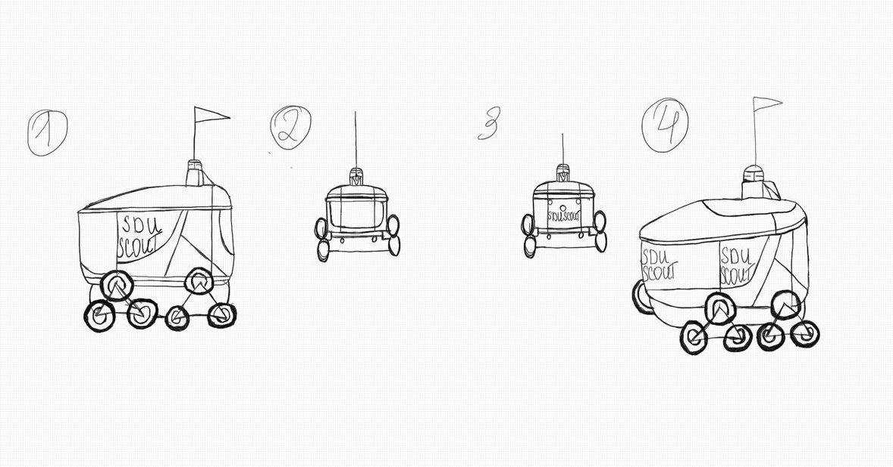
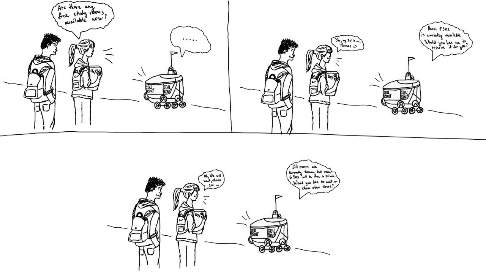

Students often face difficulties when searching for free study rooms, especially during peak times such as exam periods. Physically searching for rooms is inefficient and time-consuming. Automating this process through a robot that provides real-time data will be the optimal solution to this problem.
Our idea is to create a robot that helps students find available study rooms. The primary function of the robot is to provide real-time information on room availability. This solution is designed to simplify student life by giving quick access to essential information and increasing overall efficiency.
The use of a robot also allows for real-time interaction(voice) and adaptability to student requests, making the process of finding study rooms quick, convenient, and intuitive. The system can not only locate available rooms but also suggest alternatives when primary study spaces are occupied.
We will have two robots on each floor (one makes rounds, the other helps students by answering their questions)
We created sketches that illustrate how a student interacts with the robot. The storyboard shows the student asking the robot for a free study room, followed by the robot scanning and providing a room suggestion in real-time. .
A student concerned about an empty room turns to a robot for help.
User Testing Results Overview